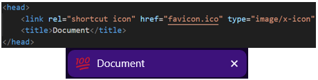

Ana Sayfa
Favicon Ekleme
Favicon :
Tarayıcı sekmesinde sayfa başlığının yanında görüntülenen küçük bir resimdir.

<!DOCTYPE html> <html lang="tr"> <head> <link rel="shortcut icon" href="favicon.ico" type="image/x-icon"> <title>Document</title> </head> <body></body> </html>
Çalıştır